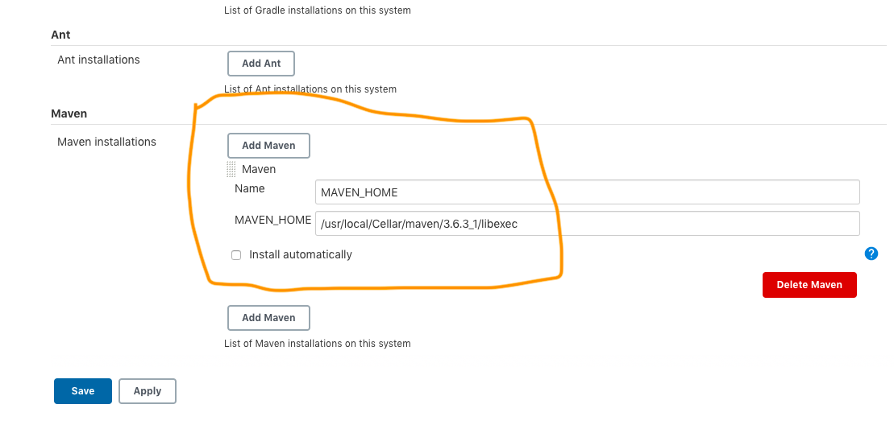

We should have below prerequisite:
#Java / JDK installed in system.
#Maven Installed in Machine
#Jenkins Installed in Machine
#My project in GIT repository
Do below Jenkins Configuration for Java JDK and Maven path. Go to Jenkins Configuration and set these two paths as below.


Create a Maven Jenkins project as below.
Go to Pre Steps ==> Execute Shell , then write below code:
mvn clean test -DsuiteXmlFile=src/main/resources/myTestNG.xml -DAppUrlValue=https://www.google.com -DBrowserName=Chrome -DReleaseName=V0.001 -DEnvironmentName=QAEnvironment
Our pom.XML build section is like below :
<build>
<plugins>
<plugin>
<groupId>org.apache.maven.plugins</groupId>
<artifactId>maven-surefire-plugin</artifactId>
<version>3.0.0-M4</version>
<configuration>
<systemPropertyVariables>
<AppUrlValue>${AppUrlValue}}</AppUrlValue>
<BrowserName>${BrowserName}}</BrowserName>
<ReleaseName>${ReleaseName}}</ReleaseName>
<EnvironmentName>${EnvironmentName}}</EnvironmentName>
</systemPropertyVariables>
<suiteXmlFiles>
<file>${suiteXmlFile}</file>
</suiteXmlFiles>
</configuration>
</plugin>
</plugins>
</build>
Where below keys are parameterized :
suiteXmlFile, which is written as
-DsuiteXmlFile=src/main/resources/myTestNG.xml
AppUrlValue, which is written as
-DAppUrlValue=https://www.google.com
BrowserName, which is written as
-DBrowserName=Chrome
ReleaseName, which is written as
-DReleaseName=V0.001
EnvironmentName, which is written as
-DEnvironmentName=QAEnvironment
Once we run the code in Jenkins -- Getting below report.
Make TestNG Jenkins Project Parameterized
Create a Maven Jenkins project as below.
Scroll down and check 'This project is parameterized' check box as below
Select Chioce parameter and give name as 'TestNGXML' and fill its choices
Select Chioce parameter and give name as 'Browser' and fill its choices
Select Chioce parameter and give name as 'ApplicationURL' and fill its choices
Go to Pre Steps ==> Execute Shell , then write below code:
mvn clean test -DsuiteXmlFile=src/main/resources/$TestNGXML -DAppUrlValue=$ApplicationURL -DBrowserName=$Browser -DReleaseName=V0.001 -DEnvironmentName=QAEnvironment
Where below keys are parameterized :
suiteXmlFile, which is written as
-DsuiteXmlFile=src/main/resources/$TestNGXML
AppUrlValue, which is written as
-DAppUrlValue=$ApplicationURL
BrowserName, which is written as
-DBrowserName=$Browser
ReleaseName, which is written as
-DReleaseName=V0.001
EnvironmentName, which is written as
-DEnvironmentName=QAEnvironment
Note : ReleaseName and Environment are hard coded.
Click on apply and save , we will see below screen :
Now Select choices , click on Build button
Once we run the code in Jenkins -- Getting below report.